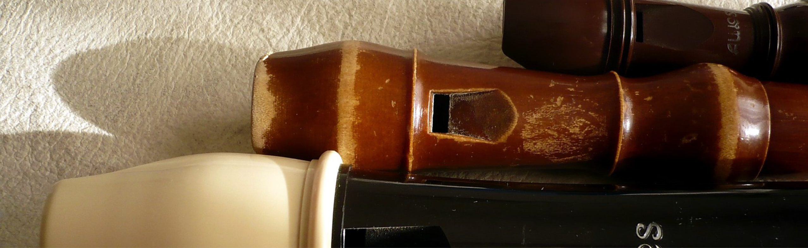

Instrument index
Home > Instrument index
This index gathers instruments treated substantially in Instrumentarium books, notes, and sketches. Alternative names lead to a single entry, and each entry connects materials published in different forms.
It does not yet attempt to register every instrument mentioned incidentally inside broad surveys. It expands as each name acquires sufficient documentary presence within the site.
A
Añáchi
Subjects: Instruments of the Ava people
Sketches
Andean bass drum
Also: bombo.
Subjects: Andean ensembles and sound practices · Recordings, repertories, and circulation
Notes
Andean transverse flute
Also: Andean transverse flutes.
Subjects: Andean ensembles and sound practices · Historical sources and organological documentation · Transverse flutes
Notes
Andean whistle
Also: Andean whistles.
Subjects: Andean ensembles and sound practices · Whistles and whistling vessels
Additional materials in Spanish
Angúa guásu
Subjects: Instruments of the Ava people
Sketches
Angúa rái
Subjects: Instruments of the Ava people
Sketches
Animal-skull instruments
Subjects: Instruments and animal materials
Additional materials in Spanish
Ava Idiophones
Subjects: Instruments of the Ava people
Sketches
B
Bajón
Also: bajones.
Subjects: Trumpets and horns
Additional materials in Spanish
Banda mocha horn
Also: gourd horn.
Subjects: Recordings, repertories, and circulation · Trumpets and horns
Additional materials in Spanish
Bullroarer
Also: bullroarer.
Subjects: Bullroarers
Notes
Buxíxh
Subjects: Duct flutes · Instruments of the Chiquitano people
Sketches
C
Caña de millo
Also: flauta de millo, pito atravesao.
Subjects: Recordings, repertories, and circulation · Traditional clarinets
Notes
Additional materials in Spanish
Charango
Subjects: Andean ensembles and sound practices · Recordings, repertories, and circulation
Notes
Chimu antara
Subjects: Panpipes
Notes
Chirimía of Cauca
Also: chirimía flute.
Subjects: Andean ensembles and sound practices · Historical sources and organological documentation · Transverse flutes
Notes
D
Deer-eye rattles
Also: deer-eye shakers.
Subjects: Historical sources and organological documentation · Instruments and animal materials · Rattles and shakers
Double flute
Also: double flutes.
Subjects: Andean ensembles and sound practices · Double flutes
Notes
E
Erkencho
Also: erque, erke, erkencho, irqi.
Subjects: Andean ensembles and sound practices · Traditional clarinets
Books
External-duct flutes
Subjects: Duct flutes
Notes
F
Furro
Also: furruco.
Subjects: Friction drums · Recordings, repertories, and circulation
Notes
G
Gaita of Cajamarca
Also: gaita of Hualgayoc.
Subjects: Andean ensembles and sound practices · Double flutes
Notes
H
Hathpang
Subjects: Bowed chordophones · Historical sources and organological documentation
Notes
Huari whistling bottle
Also: Huari whistling vessel.
Subjects: Musical archaeology · Whistles and whistling vessels
Notes
I
Iguaéru
Subjects: Instruments of the Ava people · Trumpets and horns
K
Kamacheña
Also: camacheña, quenilla, Easter flute, Chaco flute.
Subjects: Andean ensembles and sound practices · Historical sources and organological documentation · One-handed flutes · Quenas and notch flutes
Books
Additional materials in Spanish
L
Lithophone
Also: sounding stalactites.
Subjects: Musical archaeology · Struck idiophones
Notes
Long Andean trumpet
Also: clarín, erque, caña, corneta.
Subjects: Andean ensembles and sound practices · Trumpets and horns
Additional materials in Spanish
M
Mbiké
Subjects: Bowed chordophones · Historical sources and organological documentation
Notes
Michi rái
Subjects: Instruments of the Ava people
Sketches
Mohoceño
Also: mohoseño, moseño, moxeño.
Subjects: Andean ensembles and sound practices · Pinkillos, tarkas, and Andean duct flutes
Musical bow
Also: musical bows.
Subjects: Musical bows
Additional materials in Spanish
N
Natïraixh
Subjects: Duct flutes · Instruments of the Chiquitano people
O
One-handed flutes
Subjects: Andean ensembles and sound practices · Historical sources and organological documentation · One-handed flutes · Quenas and notch flutes
Books
Additional materials in Spanish
Orellana’s arrabel
Also: Amazonian arrabel.
Subjects: Bowed chordophones · Historical sources and organological documentation
Notes
P
Panpipe
Also: pan flute, panpipes.
Subjects: Andean ensembles and sound practices · Historical sources and organological documentation · Instruments and animal materials · Panpipes · Sikus and sikuri bands · Struck idiophones
Notes
Pinguyo
Subjects: Instruments of the Ava people
Sketches
Pinkillo
Also: pinkillu, pinquillo.
Subjects: Andean ensembles and sound practices · Pinkillos, tarkas, and Andean duct flutes
Q
Quena
Also: kena.
Subjects: Andean ensembles and sound practices · Musical archaeology · Quenas and notch flutes · Recordings, repertories, and circulation
S
Sananáx
Subjects: Instruments of the Chiquitano people · Trumpets and horns
Sketches
Scissors of the Scissors Dance
Also: musical scissors.
Subjects: Andean ensembles and sound practices · Bowed chordophones · Struck idiophones
Siku
Also: panpipe, zampoña.
Subjects: Andean ensembles and sound practices · Panpipes · Recordings, repertories, and circulation · Sikus and sikuri bands
Notes
Additional materials in Spanish
South American clarinets
Subjects: Historical sources and organological documentation · Traditional clarinets
T
Tarka
Also: tarqa, anata, pinkillu, pinkayllu.
Subjects: Andean ensembles and sound practices · Pinkillos, tarkas, and Andean duct flutes
Additional materials in Spanish
Temímby guásu
Subjects: Instruments of the Ava people
Sketches
Temímby púku
Subjects: Instruments of the Ava people
Sketches
Temímby ye piása
Subjects: Instruments of the Ava people
Traditional clarinets
Subjects: Traditional clarinets
Traditional violin
Also: traditional fiddles.
Subjects: Andean ensembles and sound practices · Bowed chordophones · Struck idiophones
Turtle shell
Also: sounding turtle.
Subjects: Instruments and animal materials · Panpipes · Struck idiophones
Notes
Turúmi
Subjects: Instruments of the Ava people
Sketches
Tyopïx
Subjects: Duct flutes · Instruments of the Chiquitano people
Sketches
W
Wakaránty
Subjects: Instruments of the Ava people · Trumpets and horns
Waqra phuku
Also: waqrapuku, wakrapuku.
Subjects: Andean ensembles and sound practices · Instruments and animal materials · Trumpets and horns
Notes
Wax-head flute
Also: wax-head flutes.
Subjects: Duct flutes · Wax-head flutes
Additional materials in Spanish
Whistles of the Ava people
Subjects: Instruments of the Ava people · Whistles and whistling vessels
Sketches
Y
Yoresoma
Subjects: Duct flutes · Instruments of the Chiquitano people
Sketches
Yoresóx
Subjects: Duct flutes · Instruments of the Chiquitano people
Sketches